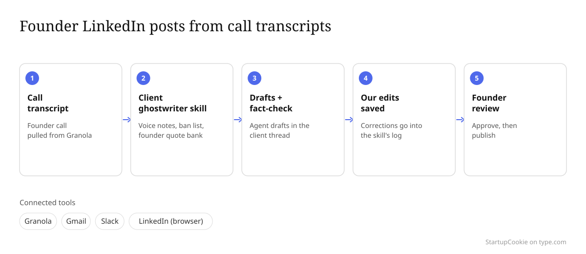
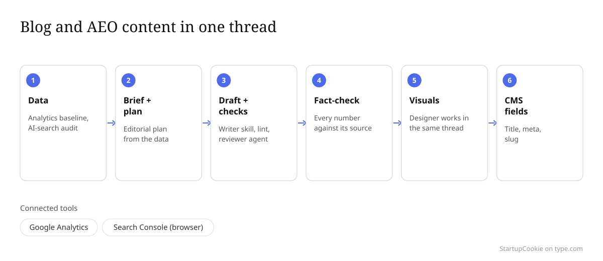
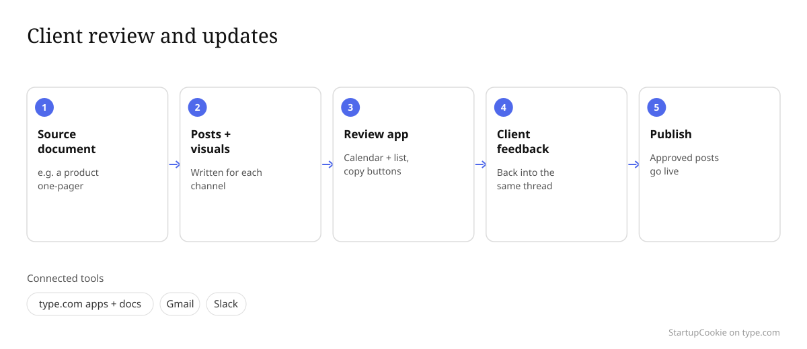

type.com is an AI workspace where teams and AI agents work together in shared threads, connected to the tools you already use, like Slack, Gmail, Google Docs and your analytics. We started using the type.com AI workspace on August 23, 2026, and it now runs most of our client content work. This is our own write-up of what we do in it, with the numbers we could verify from our workspace and the parts that still need work.
Who we are
StartupCookie is a small, AI-native content and GTM agency for B2B SaaS startups. We do founder LinkedIn ghostwriting, thought leadership, product marketing, AEO (AI search) content, video and custom GTM agents. We cap the roster at six clients and programs start at $5,000 a month.
Barbara runs strategy, writing and every client relationship. Jelena Vojnović handles design production: blog visuals, data tables and video name tags [CONFIRM: Jelena's title, and that she's OK being named]. In type.com today we support 5 clients, each in its own space.
The problem before type.com
In 2025 our process was, in Barbara's words, "a ChatGPT chat box that I prompted for every single task." Every chat started from zero. Voice, banned phrases and client background had to be pasted in again, every time.
Early in 2026 we moved to Claude Code, with custom skills and a context folder for each client. Quality went up a lot. But everything lived on one laptop: the skills, the memory files, the client context. When Jelena needed brand context for a visual, someone had to re-explain it. Call transcripts sat in Granola, and email and Slack were separate from where the writing happened.
[CONFIRM: hours per week we lost to re-briefing, copy-pasting context and handoffs before type.com]
Why we chose type.com
We weren't looking for another AI writing tool. We wanted the setup we already had, but shared. [CONFIRM: the main reason you chose type.com, in your own words.] Three things mattered in practice:
- One space per client. Each client's skills, docs and context sit together, and both of us work from the same place.
- We kept what we'd built. We uploaded our zipped Claude Code skill folders and they became skills inside each client space. For one client, 7 skills came over in a single thread.
- Connected tools. Gmail, Slack and Google Analytics are connected, and the agent can use a browser for LinkedIn and Search Console.
The 3 workflows we run every week
These are the three workflows that do the most for us. Today, every one starts by hand in a thread. We don't have them on a schedule yet.
1. Founder LinkedIn posts from real call transcripts
Connects: Granola (call transcripts), Gmail, Slack, and LinkedIn through the built-in browser.
- We pull the transcript of a founder call from Granola into the client's space.
- The agent loads that client's ghostwriter skill: voice notes, a ban list and a bank of the founder's own quotes.
- It drafts posts and checks every claim against the transcript and our sources.
- Barbara edits. Each correction is written back into the skill's feedback log, so the same mistake doesn't come back.
- The founder reviews, then we publish.

Result: one founder call produced 17 post drafts. One client's feedback log now holds 77 corrections [CONFIRM: current count], which is why the drafts keep getting closer to the founder's voice. [CONFIRM: engagement result for these posts, e.g. average impressions before vs. after.]
2. Blog and AEO content, with design in the same thread
Connects: Google Analytics, and Google Search Console through the browser.
- We start from data: a Google Analytics baseline and an audit of 30 buyer questions in AI search.
- That becomes a brief and an editorial plan.
- A blog-writer skill drafts the post. A lint script blocks phrasing we've banned, and a separate reviewer agent reads it cold.
- A fact-check pass checks every number and claim against the source.
- Jelena makes the hero image and data tables in the same thread, using a visuals skill that already knows the brand.
- The agent writes the CMS fields: title, meta description and slug.

Result: one fact-check pass on 4 drafts caught and fixed 45 errors before the client saw them. That client moved to 4 blog posts a week on October 22 [CONFIRM: weekly volume actually delivered since then]. [CONFIRM: average turnaround from brief to approved post.]
3. Client review and updates
Connects: type.com apps and docs, plus Gmail and Slack for client updates [CONFIRM: which channels you actually use for client updates].
- We drop a source document, like a product one-pager, into the client's space.
- The agent writes posts for each channel and makes the visuals.
- It builds a small review app: a weekly calendar and a list view, with a copy button on every caption.
- The client reviews it, and their feedback goes back into the same thread.
- We publish the approved posts.

Result: one client one-pager became 9 posts across X, the brand's LinkedIn page and a spokesperson's LinkedIn, with 12 visuals [CONFIRM: visual count]. On September 17 we saved that calendar format as a skill, and we've reused it for other clients since.
Results
Every number below comes from our type.com workspace as of October 27, 2026, counting only Barbara's and Jelena's activity. Where we don't have a measured number, we've left it open instead of guessing.
| Metric | Number |
|---|---|
| Clients supported in type.com | 5, each in its own space |
| Team messages per week | 1 (week of Aug 22) → 240 (week of Oct 17) |
| Threads we started per month | 1 in August, 8 in September, 32 in October |
| Client-specific skills | [CONFIRM: count] |
| Active scheduled automations | 0. Everything starts by hand in a thread. |
| Post drafts from one founder call | 17 |
| Errors caught in one 4-post fact-check | 45 |
| Invoices reconciled against bank and card records | 69, in one session of 2 h 16 min |
| Hours saved per week | [CONFIRM: hours saved per week] |
| Turnaround, brief to approved draft | [CONFIRM: before vs. after] |
One thing we won't claim: our agency's growth over the past year started before type.com, with Claude Code. type.com is where that work became shareable across clients and between the two of us.
What we'd improve
- We don't automate client reporting with AI yet. We have zero scheduled automations. A weekly analytics and AI-search report for each client is the obvious next step.
- Skills only help if they're in the space. We lost time on one client before we'd moved its skills over.
- Usage limits. We run on our own Claude subscription, and its session limits have stopped long runs a few times.
- Drafts still need a hard edit. Ban lists and lint scripts help, but they don't replace an editor.
Who type.com is a good fit for, and who it isn't
A good fit if you're a small agency or content team handling several clients or brands with different voices, and you want AI agents that work from shared context instead of a blank chat. It's especially useful if you already have prompts or Claude Code skills you want your whole team to use, and your work lives in Gmail, Slack and your analytics.
Not a fit if you want finished content with no editing, or you only need help with one document at a time. It also takes setup: skills, ban lists and review formats get better because you keep correcting them. And if a client contract limits AI tools, check that before you move their work in.
Frequently asked questions
What is type.com?
type.com is an AI workspace where teams and AI agents work together in shared threads. It connects to tools like Slack, Gmail, Google Docs and your analytics. Skills, documents and context are shared inside a space, so everyone on the team works from the same setup.
How do content marketing agencies use type.com?
We give each client their own space with its own skills, documents and connected tools. AI agents research, draft, fact-check and build review apps inside client threads, and the team edits and approves there. Our biggest uses are founder LinkedIn posts, blog and AEO content, and client review calendars.
What tools does type.com integrate with?
We use it with Gmail, Slack, Google Analytics, Granola and GitHub, and the agent can work in a browser for sites like LinkedIn and Search Console. type.com also connects to Google Docs and other apps, so check its integrations list for your own stack.
Is type.com the same as type.ai?
No. type.ai is a separate AI writing editor. type.com is an AI workspace for teams and agents.
How long did it take to set up?
We opened our first client space on August 23, 2026 and had four client spaces running by September 23. Moving a client's Claude Code skills over took one thread: we uploaded the zipped folders and the agent turned them into space skills. [CONFIRM: hours it took to get the first client space working.]